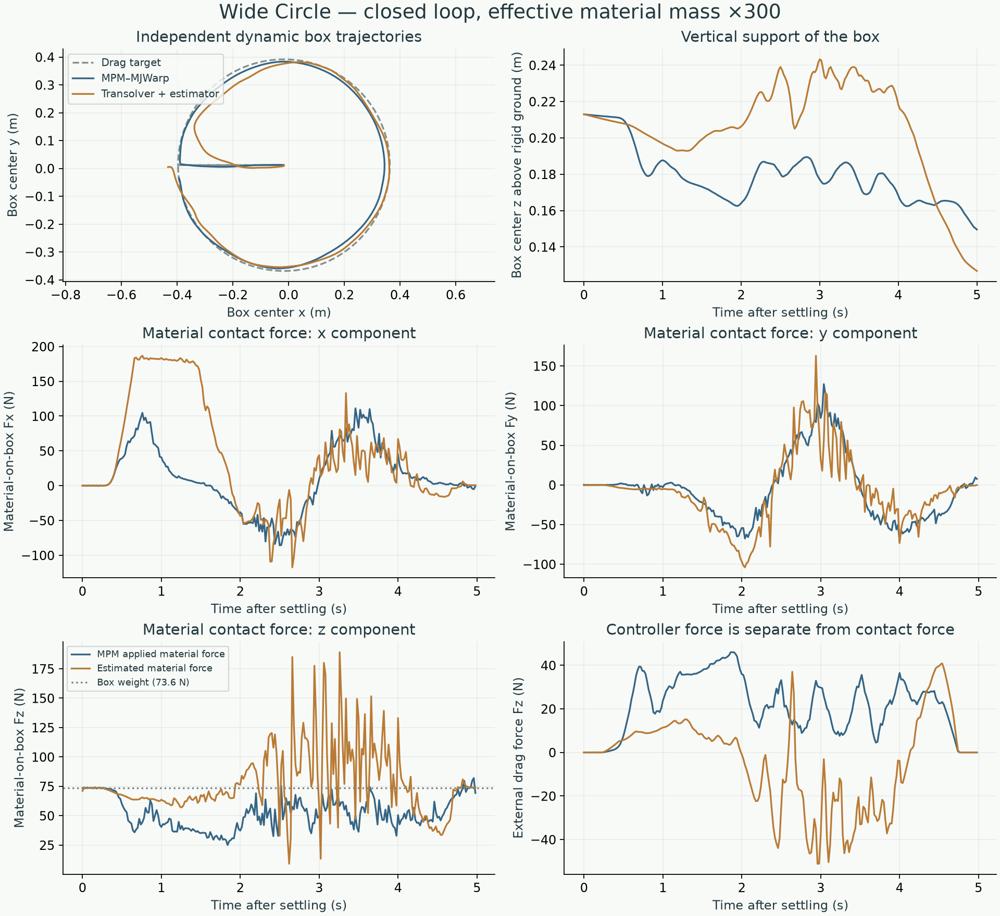
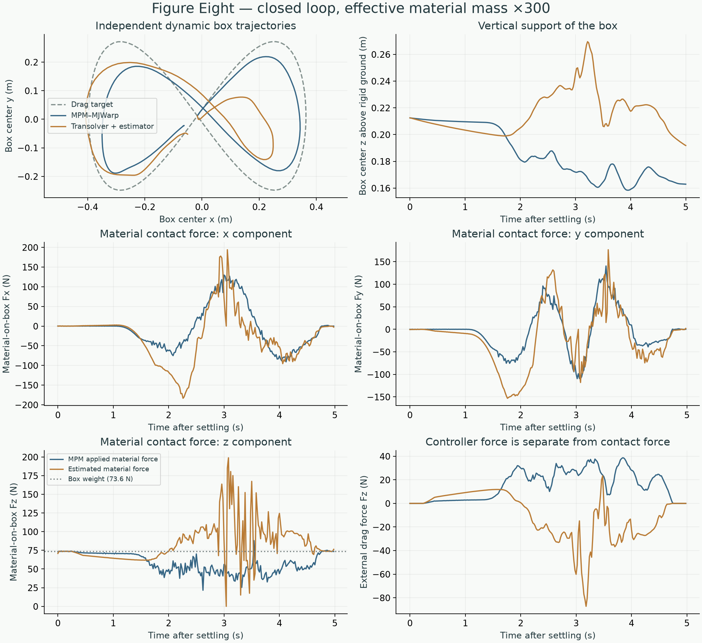

FULL DYNAMIC SIMULATION / EFFECTIVE MATERIAL MASS ×300
Transolver particles and estimated contact forces in the loop
A wide circle and a figure eight, driven by mouse-drag-style forces on a dynamic box. Effective material-particle mass multiplier: ×300.
01 / Simulation pipeline
Reference
MPM material state + own box state → MPM material reaction / coupler → MJWarp + external drag force → next box state → next MPM step
Full learned simulation
Own particle history + own box state → Transolver particle displacement → particle velocity = displacement / dt → analytical material-contact impulses → force + torque on box → MJWarp + external drag force → next box state → next prediction
Initial particle positions (three history frames), particle masses/material parameters, and the settled box state come from the reference. After initialization, the learned simulation uses no future reference particle states, box motion, or MPM forces. All particles advance recurrently without resets or region selection. Estimated contact impulses are not applied to particles a second time.
02 / Force-driven controller and integration
F_drag = envelope × clamp_norm(m × [120 × (target − box_position) − 15 × box_velocity], 2.5 × m × 9.81) τ_drag = 0 (force applied at box center of mass)
Both simulations use the same target and controller at 5 ms intervals, evaluated against each simulation’s own box state. Actual applied forces differ as the box trajectories separate. The box is never assigned a target pose or target velocity. Active dragging is 0.25–4.75 s, with a 0.75 s lead-in. The circle target is 0.76 m in diameter; the figure-eight target spans 0.76 × 0.52 m.
| Setting | Reference | Learned simulation |
|---|---|---|
| Material update | MPM: 5 ms, 25 solver iterations | Transolver: 20 ms, all 16,384 particles |
| Effective material-particle mass multiplier | Not an MPM setting | ×300 in the analytical estimator; physical masses unchanged |
| Material reaction on box | MPM coupler feedback | Analytical estimator every 20 ms; held for four MJWarp substeps |
| Rigid-body update / drag controller | MJWarp: 5 ms / controller: 5 ms | |
| Scene | 1 × 1 × 0.5 m initial material volume, sand; reference grid 0.04 m; 7.5 kg box, 0.12 × 0.12 × 0.08 m; fixed ground at z = 0; no enclosing walls | |
| Checkpoint | — | Frozen update 10,000; trained recurrently over 0.5 s; no additional training |
The estimator’s free-motion calculation uses the external force at the start of the 20 ms interval. MJWarp recomputes the drag force each 5 ms substep. This explicit coupling approximation is part of the method being tested. Direct contact between the box and rigid ground is handled by MJWarp; it is not labeled as material force.
03 / Measurements
| Path | Box position RMS difference | Final box position difference | Final particle position RMSE | Material force vector RMS difference |
|---|---|---|---|---|
| wide-circle | 10.7 cm | 7.3 cm | 5.2 cm | 81.7 N |
| figure-eight | 8.4 cm | 4.3 cm | 6.3 cm | 73.8 N |
Force values are world-frame forces exerted by material on the box, excluding gravity and the external drag force. Reference forces are the MPM feedback actually applied to MJWarp, averaged over the same 20 ms intervals. Positive Fz acts upward. No temporal filtering is applied.
These are full-trajectory differences, not same-state force-estimation errors: the two boxes and particle systems evolve differently. Particle errors now include the effect of different box motion. Tracking the drag target alone does not prove correct contact physics because the controller can compensate for incorrect material forces.
The contact solver converged in every step: median 854 / 1026 iterations and maximum 1677 / 1680 for circle / figure eight (limit 2,000; residual tolerance 1e−9). Effective particle mass scale = 300, stabilization = 0.01, velocity-gradient radius = 0.065 m, friction = 0.6. Only the effective-mass multiplier was changed for this experiment. No force filtering, checkpoint retraining, or scene changes were introduced.
Wide Circle
Left: MPM–MJWarp. Right: Transolver particles + analytical material-force estimator + MJWarp. Effective material mass multiplier: ×300. Each box follows its own dynamics. The two simulations share only initialization and the external drag target. Same camera, particle appearance, box appearance, and lighting.

Figure Eight
Left: MPM–MJWarp. Right: Transolver particles + analytical material-force estimator + MJWarp. Effective material mass multiplier: ×300. Each box follows its own dynamics. The two simulations share only initialization and the external drag target. Same camera, particle appearance, box appearance, and lighting.

04 / What this establishes
The complete loop runs for both requested five-second trajectories without nonfinite states. The estimated vertical material force reaches 189.1 N for the circle and 198.9 N for the figure eight. Force profiles, box paths, and orientations still differ from the MPM reference; orientation errors are included in the downloadable measurements. The current result supports integration feasibility, not MPM-equivalent dynamics. The plots cannot separate particle-prediction error from the estimator’s effective-mass approximation or the 20 ms coupling interval.